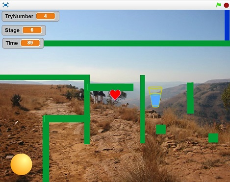

Final Project Content
Scratch Final Project
Description
My project will be a game made in Scratch where the player plays a ball trying to get through a maze without touching the walls. The player must also clear each stage as fast as possible and with as least accidents as possible. This is an extension of my original Scratch Project and will be more complicated as a result. I added another stage which is more challenging and complicated than the others with more moving walls where timing is key. I added a scoreboard (using a list) to keep track of the user's and other user's scores which are paired with the user's name. I also added a list to keep track of the items the player picks-up throughout the game. At the end I used a method to count up all the items the player got and then subtract the needed amount from the number of trys and time variables. I also used a method which I gave a integer value for combined score and a string value for the user's name which the method added to the two scoreboard lists which display on the final screen.
The screenshot seen above is of the last and most difficult level is the game. There are three, fast-moving walls and two small squares. If the player obtains the glass of water, their time score (in the top left corner) will decrease by 40 seconds. If they collect the heart, their try count will decrease by two trys.